Batman'in filmlerinde kullandýðý kýyafet yani BATSUÝT'ler her filmde farklý, her olayda farklý olabiliyor.
Yani þunu demek istiyorum, savaþýn boyutuna göre, yaptýðý göreve ve o görevin zorluðuna göre giydiði Batsuitler deðiþkenlik gösteriyor.
Batman'in bir den fazla batsuit'i karargahýnda mevcuttur. 1943 yýlýndan 2016 yýlýna kadar "ANA" Batsuiti deðiþmiþtir.
Görseller ile ifade ettiðim zaman daha rahat anlayacaksýnýz...
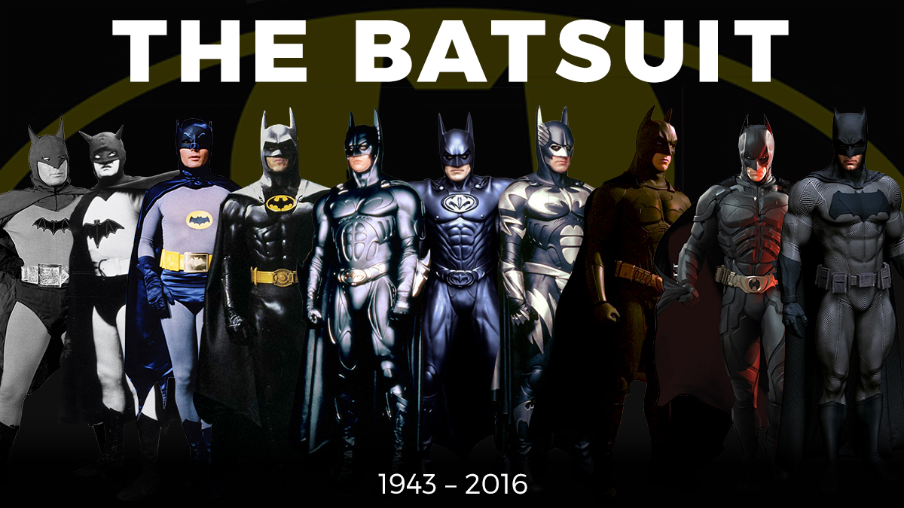
Batman aslýnda filmlerden önce çizgiroman olarak ortaya çýkmýþtýr. Batman sinemalara 1989 yýlýnda girerken bu yýlýn daha öncesi amatör bir þekilde televizyonlarda vardý.
Batman aslýnda ilk önce çizgi romanlarda yerini aldý. Daha sonra ise çizgifilm olarak televizyonlarýmýza girdi.Adamlar parayý buldu tabi iþi büyüttüler ve çok daha donanýmlý çok daha ekip kadrosunu büyültüp sinemalara girmeye karar verdiler.
Tabi 2000 yýlýna göre teknolojiden kaynaklý olduðunu düþünüyorum biraz amatörceydi. Fakat 2000 yýlýndan sonra "Kara Þovalye Yükeliyor filmi ile yükseliþlere geçti ve gerçek Batman keyfini sürmeye baþladýk.
Bu süreçte Batmanýn çizgiromanlardaki,çizgifilmlerdeki,ve günümüze gelene kadar ki kýyafeti deðiþti.Teknoloji ve Paranýn gücü sayesinde :D Biliyorsunuz ki Wayne Zengin bir iþ adamý ayný zamanda...
Batmanýn diðer süperkahramanlar gibi Marvel yada DC üyeleri gibi yani özel bir yeteneði yoktur.
Batman bir insandýr. Ve bu kadar güçlü olmasýnýn sebebi Batsuitlerinde kullandýðý teknoloji. Her Batsuitin birbirinden farklý güçleri ,dayanýklýklarý,ve öz yetenekleri vardýr.
Tabi ki de her birinde kullanýlan teknoloji farklýdýr.
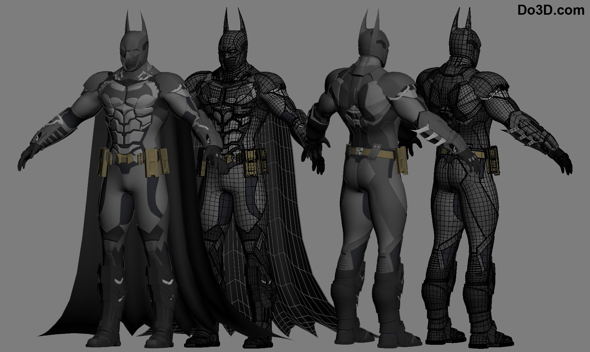
Batsuitlerin özelikleri çok fazla burda anlatsam eminimki okumazsýnýz :D Ama size bir tavsiyem var. Batman film serilerini izlerseniz zaten bütün Batsuitlerin görevlerini anlarsýnýz.Yapýlaþlarýný bile :D
Bu kadar yeter Haydi Filme :D Sayfamda Mevcut <3
SÝLAHLAR
Evet gelelim Batmanýn silahlarýna. Batman'ýn herhangi bir özel gücü olmadýðýndan silah kullanmak zorunda.
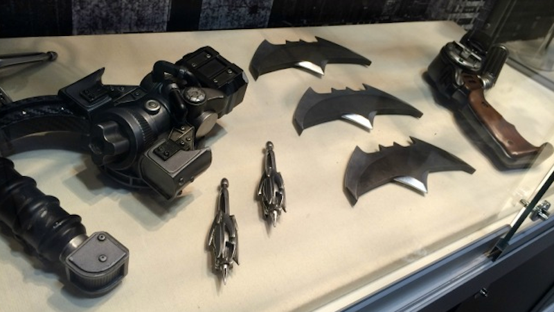
Burada gördüðünüz silahlar Batmanýn son filmi olan "Batman ve Superman" filminde kullanýlan silahlardýr.
Tabiki bu silahlarýn ve daha fazlasýnýn amaçlarý ve görevleri farklý ben size burada sadece Batmanýn en Sýk kullandýðý
silahlarý anlatacaðým. Eðer diðer silahlarýda öðrenmek isterseniz filmi sitemden izleyebilirsiniz <3
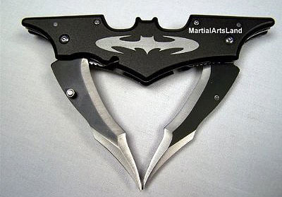
Bu Batmanýn meþhur silahý olan "BATARANG"'dýr.
Aslýnda çýðlak göz ile bakýldýðýnda sýradan bir Batman logosu gibi gözükebilir. Ama bu Bataranglar bile birden fazladýr.
Ve tabikide Özellikleride. Yani bazý Bataranglarýn içinde patlayýcý bomba,sis bombasý,ses bombasý gibi özellikler bulunur.
Ayný zamanda iz takip etme özellikleri var. Hatta bir Batman oyununda o Bataranglarý biz kullanýyorduk :D
Batman bu özellikli Bataranglar dýþýnda yapmýþ olduðu çok saðlam ve çok güçlü bir metalden bataranglarýda yanýnda taþýr.ve düþmanlarýna onlarý fýrlatýr.
Direkt kesiyor.Çok güçlü.
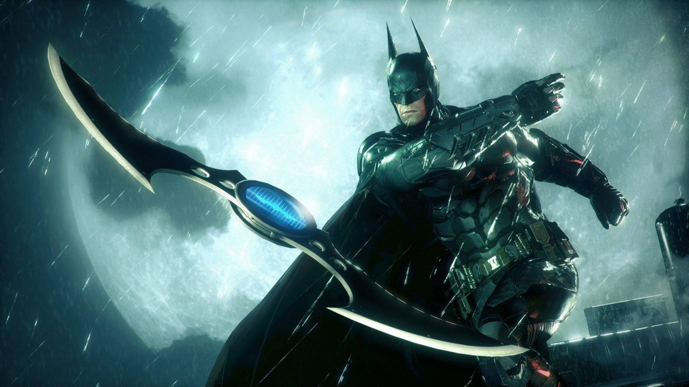
Gelelim 2. silahýmýza. Kanca :D Duyulduðunda evet komik ama elinize geçse neredeyse örümcekadam gibi binadan binaya uçucaksýnýz :D
Batmanýn Uçma, Kaçma vs vs gibi yetenekleri olmadýðý için kanca adýnda bir silah üretti. Bu silahýn adýndanda anlaþýlýcaðý gibi,
Batman bir yere o silahla ateþ ettiði zaman Silahýndan bir kanca fýrlatýr ve Silahta bulunan bir tuþa basarak o kanca batmaný kendisine çeker. Ve çok güçlü bir silahtýr.
Çok aðýr kilolarý çekebilir. Batman bu silahý genellikle kaçmak için yada gizli görevler için kullanýyor.
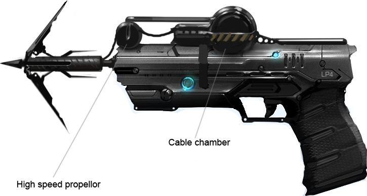
Ayný zamanda çok eðlenceli bir silah :D:D
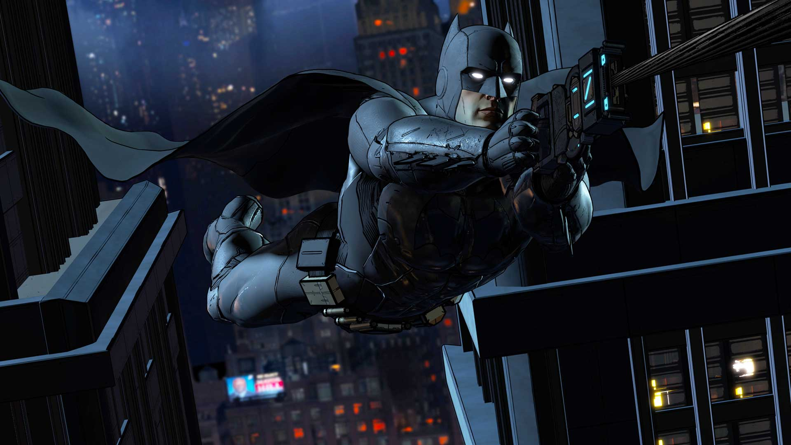
3. Silahýmýzýn adý biraz tuhaf. 'Çeneli Tüfek'. Evet bu tüfeðin çenesi var :D yok yok þaka yapýyorum.
Bu silahýn altýnda zehirli oklarý takabildi kýsma çene adýný vermiþ, fotoðraftada gördüðünüz gibi çeneye benzer bir duruþu var.
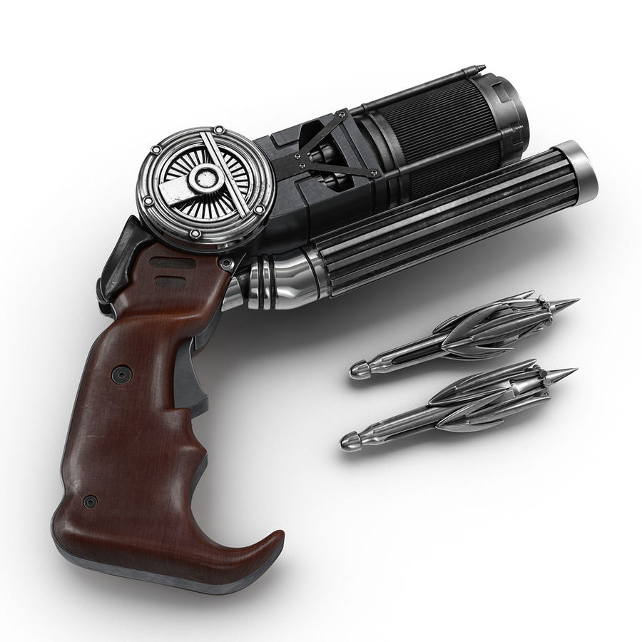
Orada gördüðünüz okun ucuna benzer metallerin içinde zehir vardýr. ve düþmana ateþ edildiði taktirde delip içindeki zehri boþaltýyorç
Maksimum 1 dk içersinde de etkisini çok hýzlý bir þekilde gösteriyor.
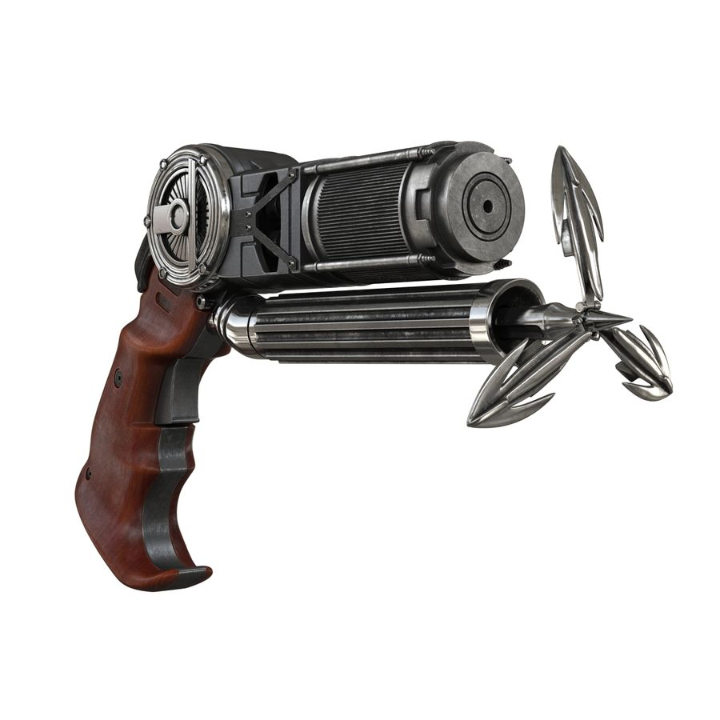
Tasarým olarak Kanca silahýna çok benziyor. Fakat iþlevleri birbirinden çok farklý.
ARAÇLAR
Sýrada Batmanýn kullandýðý araçlar var.
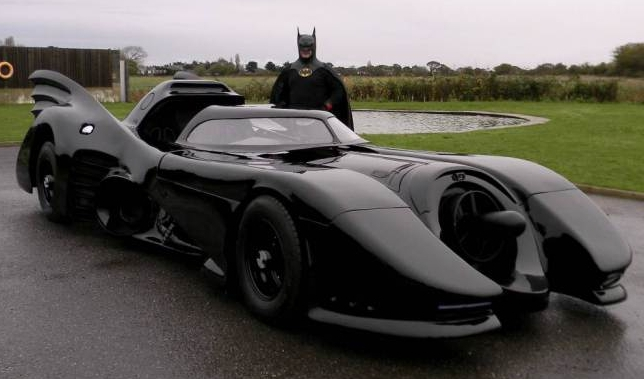
Evet bu ilk batmobil. Bu arabanýn arkasýnda bulunan roketleme sayesinde hýzlý gitmesinin
dýþýnda pekte bir özelliði yok. Bunu geçiyorum :D
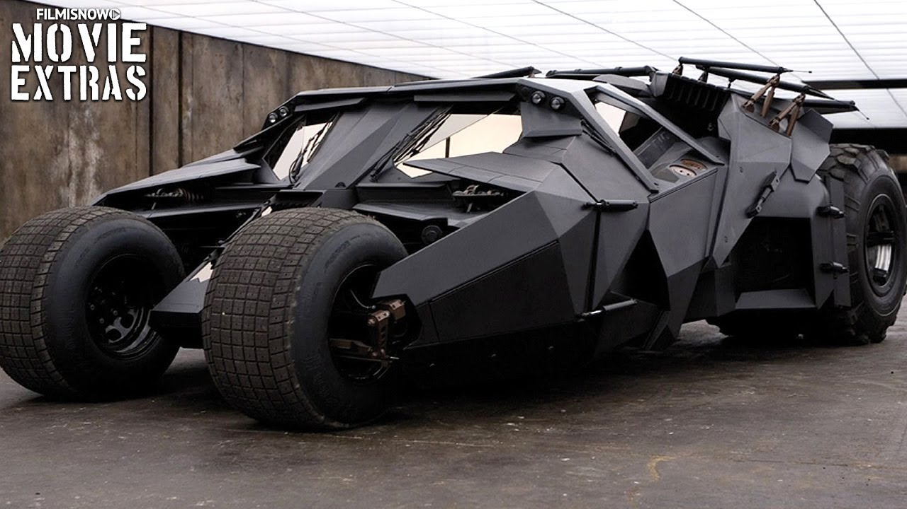
Ýþte bu canavar :D Batmanýn 2000 yýlýndan sonra yaptýðý teknoloji ve para geldikten sonra yani , yapmýþ olduðu batmobil.
Bu batmobilin özellikleri ise kurþun geçirmez,yanmaz, tekerleklerin her biri 360 derece dönebiliyor. Bu ne iþe yarar ki demeyin :D
Savaþ moduna geçtiði zaman 360 derece etrafýnda dönmesini saðlýyor. Savaþ modu demiþken evet bu araç savaþabiliyor :D
Arabanýn içinde minigun var,ayný zamanda focus(kitlenme) özelliðine sahip roketler mevcut. Ve Batman bu aracý kullanmak için içinde olmasý gerekmiyor.
Yani uzaktan kontol edilebiliyor .
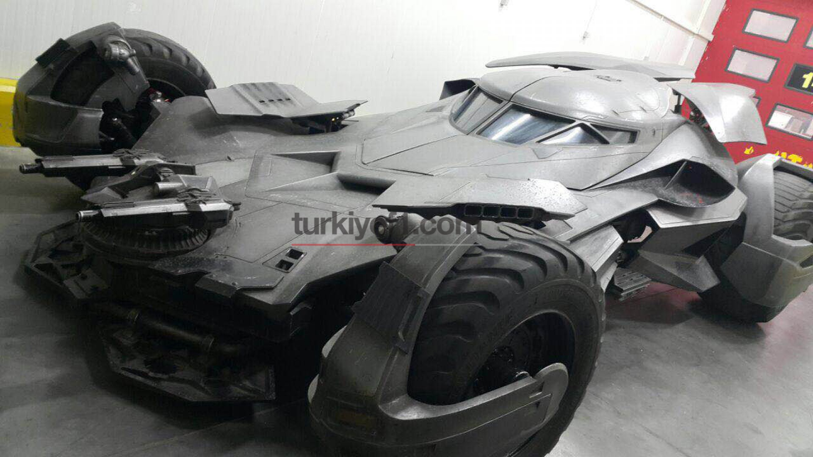
Buda son Batmobili. Özellikleri yukarýdaki Batmobil ile ayný bunda ekstra olarak aracýn önünde silahlarýn altýnda bir bölme var.Bu bölmenin
içinde ise kanca var. Yani Batmanýn kanca diye bir silahý var hatýrlarsýnýz yukarýda okudunuz. O silahýn çok daha güçlü ve geliþtirilmiþ halini
Batman arabasýna koymuþ. Ne iþe yarýcak demeyin bu araç görünüþ bakýmýndan diðer araçlardan daha minimal daha hafif. Ve bu Batmobil Binalara o kanca
sayesinde týrmanabiliyor. Ve bir duvara o kancayý atýp o duvarý kendine çekebiliyor araba ile birlikte tabiki,geri giderek yani .Çok güçlü.
Ekstra olarak dediðim gibi daha minimal daha hafif ve kanca mevcut. Diðer özellikleri Üstteki ile ayný.
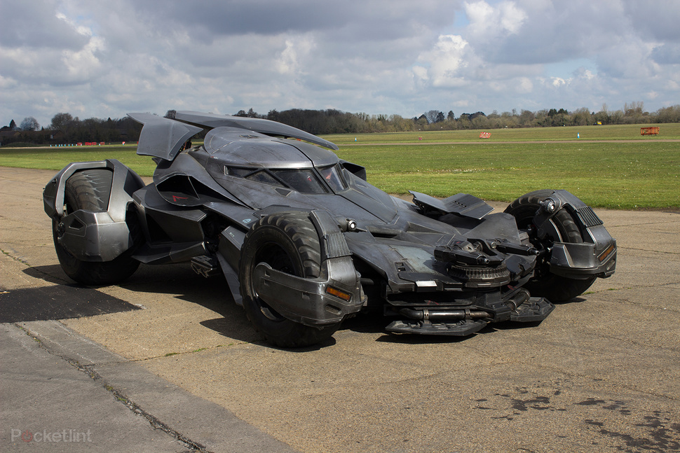
Arabalarý bu kadar :D Çok donanýmlý ,Çok pahalý vede Çok güçlü.
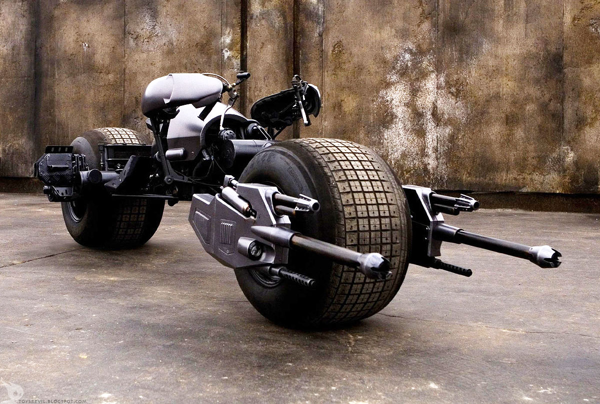
Buda Batmanýn Motoru. Pek fazla sahnelerde gözükmez kendisi :D biraz gizemlidir. 1 2 filminde var sadece .
Çýplak göz ile bakýldýðýnda bir iskeletin üzerine konulmuþ 3 5 demir yýðýný gibi gözüküyor.Ama bu motor da çok hýzlý ve çok güçlü .
Týpký Batmabilde olduðu gibi bu motordada ön tekerleðinin sað ve sol kýsmýnda birer adet Silah vardýr. Tabi normal bir silah deðil.
Yani bu motor hakkýnda söylenilicek pek fazla biþey yok. Bu kadar yeter :D
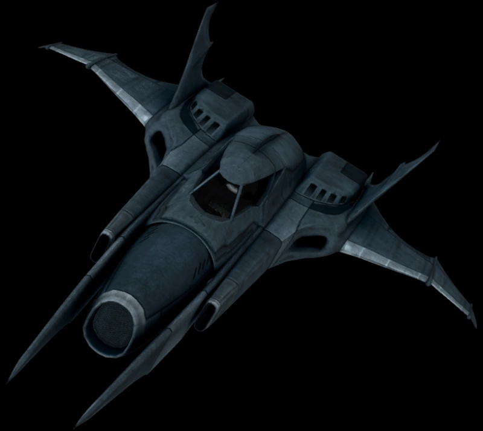
Ve ve ve ve ve son Batman aracý. Batmanýn uçaðý.
Bu uçak gerçekten hem oyunlarda hem filmlerde,çizgifilmlerde çok nadir gösteriliyor varla yok arsýnda lanse edliyor.Ama var biliyoruz.
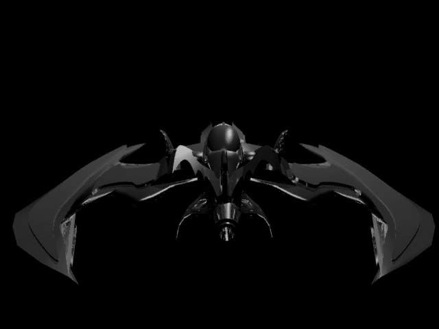
Bu uçak ta her filmde deðiþiyor zaten çok gösterilmediði için fazla önem vermiyolar.
Tek bildiðim þey çok hýzlý uçmasý. Uzaktan kontrol edilebiliyor. Vede genellikle hep Karargahta bekliyor.
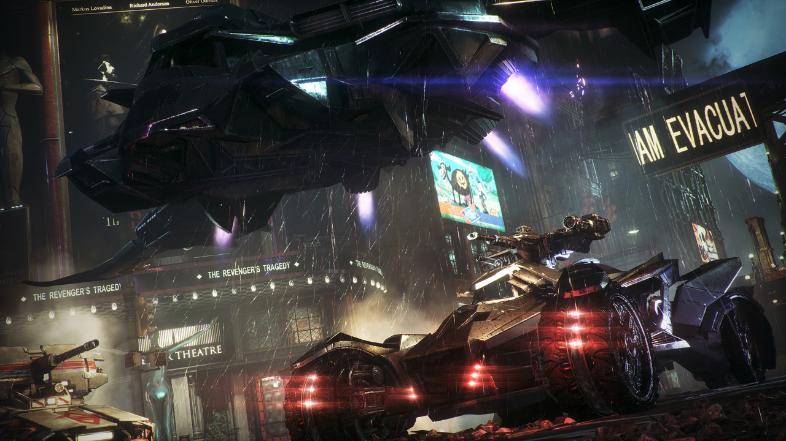
Batmobil ve uçaðýn tek beraber görüntüsü Ve burda batmobili uçak getirmiþtir.
Batmanýn Ekipman ve Araçlarý, En sýk kullandýklarý ve önemli olan araçlarýný size tanýtmaya çalýþtým.
Bir Not daha! Burada sizlere sunmuþ olduðum bütün Batsuitler,arabalar,motor,silahlar Batmanýn müzesinde bulunmaktadýr.
Yani burada gördüðünüz "Uçak Hariç :D" Hepsi gerçek hayatýmýzda mevcut.